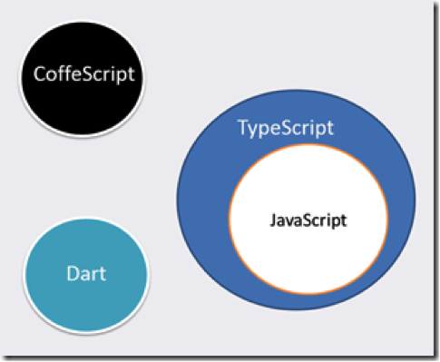

Creado por Alvaro José Agámez Licha / @CodeMaxter
JavaScript se ha convertido en el lenguaje por excelencia de internet, comenzó siendo un pequeño lenguaje para realizar algunas validaciones y efectos varios y con el paso de los años se ha convertido en la piedra angular de la internet moderna.
JavaScript se ha convertido en el lenguaje por excelencia de internet, comenzó siendo un pequeño lenguaje para realizar algunas validaciones y efectos varios y con el paso de los años se ha convertido en la piedra angular de la internet moderna.
Es aquí donde la Programación Orientada a Objetos nos puede dar una mano con la complejidad cada vez mayor de nuestras aplicaciones.
"JavaScript es un lenguaje orientado a objetos donde no existe el concepto de clase, y como tal, se usa herencia prototipada en lugar de la herencia clásica. Esto puede ser desconcertante para los programadores acostumbrados a lenguajes orientados a objetos convencionales como C++ y Java. La herencia prototipada de JavaScript tiene más capacidad expresiva que la herencia clásica, como vemos en la actualidad." Douglas Crockford
Los tres objetivos principales de la programación orientada a Objetos son:
Estos tres objetivos principales se pueden lograr en JavaScript y nos ayudarán a que nuestras aplicaciones sean más robustas y escalables.
Todo lo que se puede manipular en JavaScript es un objeto. Esto incluye Strings, Arrays, Numbers, Funciones y, obviamente, el supuesto Objeto — hay primitivas, pero estos son convertidos a un objeto cuando se necesita operar sobre ellos. Un objeto en el lenguaje es simplemente una colección de pares clave/valor (y algo de magia interna a veces).
No existe el concepto de clases en ningún lugar. Es decir, un objeto con las propiedades: name: John, age: 21 no es una instancia de alguna clase, la clase Object. Object y Linda son instancias de sí mismos. Definen su propio comportamiento, directamente. No hay capas de meta datos (es decir: clases) que digan a los objetos como deben lucir.
Los objetos en JavaScript son simples pares de claves únicas que corresponden a un valor, llamaremos a este par una propiedad. Así, supongamos que se desea describir algunos aspectos de una persona (John por ejemplo), como nombre, edad y género:
person = new Object();
person.name = "John";
person.age = 30;
person.gender = "male";
Lo que terminamos teniendo en Javascript es una secuencia de pares clave/valor que nos representarán la instancia del objeto.
Una característica de los objetos en JavaScript, es que podemos acceder a sus propiedades como si se tratase de un Array, siendo las posiciones del Array los nombres de las propiedades del mismo:
person = new Object();
person.name = "John Doe";
person.age = 30;
person.gender = "male"
var result = 'person.name: ' + person["name"]
+ ' - person.age: ' + person["age"]
+ ' - person.gender: ' + person["gender"]
alert(result);
Esta curiosa característica de los objetos JavaScript también nos brinda la posibilidad de iterar a través de las propiedades de un objeto, con un ciclo for in:
person = new Object();
person.name = "John Doe";
person.age = 30;
person.gender = "male";
for (var property in person) {
alert(property + ': ' + person[property]);
}
Aunque pueda parecer una trivialidad esta característica de los objetos en JavaScript, les aseguro que nos puede resultar muy útil en algunos escenarios.
En JavaScript una "clase", o mejor dicho, el prototipo de un objeto se construye mediante una simple función (recordemos que todo en JavaScript son objetos). Cuando una función es llamada con el operador new la función sirve como un constructor para la "clase".
function Person() {
this.name = "John";
this.age = 30;
this.gender = "male";
}
person = new Person();
En JavaScript, cada objeto puede heredar propiedades de otro objeto, llamado su prototipo. Al evaluar una expresión para recuperar una propiedad, JavaScript verifica primero si la propiedad está definida directamente en el objeto. Si no es así, entonces verifica en el prototipo del objeto para ver si la propiedad está definida allí. Esto continúa a través de la cadena de prototipos hasta el prototipo raíz. Cada objeto está asociado con un prototipo que proviene de la función constructora de la que se crea.
Por ejemplo, si queremos crear un objeto CanusLupus, desde el constructor Canidae, cuya cadena de prototipo es: Canidae.prototype, Mammalia.prototype, Object.prototype:
Usaríamos el siguiente código:
Object.prototype.domain = "Eukaryota";
function Mammalia() {
this.hotBlood = true;
this.class = 'Mammalia';
}
Mammalia.prototype.mammalsGlands = true;
// Enlazar Mammalia a la cadena de prototipado de Cannidae
Canidae.prototype = new Mammalia;
Canidae.prototype.constructor = Mammalia;
function Canidae() {
this.class = "Canidae";
}
Canidae.prototype.canFly = false;
canusLupus = new Canidae;
var result = canusLupus.domain + ', ' + canusLupus.class
+ ', ' + canusLupus.mammalsGlands
+ ', ' + canusLupus.hotBlood + ', ' + canusLupus.canFly;
alert(result);
JavaScript permite asignar una función a una propiedad de un objeto. Cuando se llame a esa función con la sintaxis objecto.nombreFuncion(), se ejecutará la función con this definido como una referencia al objeto.
Una de las formas de definir métodos para una "clase" es agregarlos al prototipo de un constructor. Así, todos los objetos creados con el constructor automáticamente heredarán las referencias de la función a través de la cadena de prototipos.
function Person(name, lastName) {
this.name = name;
this.lastName = lastName;
}
Person.prototype.completeName = function() {
return this.name + " " + this.lastName;
}
person = new Person("Alvaro", "Agamez");
alert(person.completeName());
Otra manera de definir los métodos para una "clase" es definirlos dentro del constructor de la misma, asociados a this; sobre este punto hablaré más adelante:
function Person(name, lasstName) {
this.name = name;
this.lastName = lasstName;
this.completeName = function() {
return this.name + " " + this.lastName;
}
}
person = new Person("Alvaro", "Agamez");
alert(person.completeName());
Se logra simplemente teniendo diferentes clases de objetos que implementan una colección de métodos que utilizan los mismos nombres. Entonces, un invocador, sólo necesita utilizar el nombre correcto de función para invocar la función apropiada para cada tipo de objeto.
function A() {
this.x = 1;
this.doIt = function() {
this.x += 1;
}
}
function B() {
this.x = 1;
this.doIt = function() {
this.x += 2;
}
}
a = new A;
b = new B;
a.doIt();
b.doIt();
alert(a.x + ', ' + b.x);
El paradigma estándar, es utilizar la cadena de prototipos para implementar la herencia de métodos de una super clase. Cualquier método definido en la subclase sustituirá a los definidos en la super-clase.
// Define super class
function A() {
this.x = 1;
}
// Define Method
A.prototype.doIt = function() {
this.x += 1;
alert("A.dotIt");
}
// Define sub-class
B.prototype = new A;
B.prototype.constructor = B;
function B() {
// Call super-class constructor (if desired)
A.call(this);
this.y = 2;
}
// Define Method
B.prototype.doIt = function() {
// Call super-class method (if desired)
A.prototype.doIt.call(this);
this.y += 1;
alert("B.dotIt");
}
b = new B;
alert((b instanceof A) + ', ' + (b instanceof B));
b.doIt();
alert(b.x + ', ' + b.y);
JavaScript soporta miembros privados, ya sean propiedades o métodos, y para lograrlo simplemente debemos declararlos en el constructor de la "clase" como si de cualquier variable o función de JavaScript se tratase:
function Container(param) {
this.member = param;
var secret = 3;
var that = this;
}
Este constructor genera tres variables de instancia privada: param, secret y that. Estas están ligadas al objeto, pero no son accesibles desde exterior, ni son accesibles a los métodos públicos del objeto. Son accesibles a los métodos privados.
Si creamos una "clase" con un método público que intente acceder a los miembros privados de la misma, obtendríamos un error:
function Container(param) {
function dec() {
if (secret > 0) {
secret -= 1;
return true;
} else {
return false;
}
}
this.member = param;
var secret = 3;
var that = this;
}
Container.prototype.publicMethod = function() {
return this.secret;
}
container = new Container('John Doe');
alert('container.member: ' + container.member);
alert('secret: ' + container.secret);
alert('that: ' + container.that);
alert('publicMethod: ' + container.publicMethod());
alert('that: ' + container.dec());
Un método privilegiado es capaz de acceder a los métodos y variables privadas y es accesible a los métodos públicos y el exterior. Es posible eliminar o sustituir un método privilegiado, pero no es posible modificarlo, o forzarlo a revelar sus secretos.
function Container(param) {
function dec() {
if (secret > 0) {
secret -= 1;
return true;
} else {
return false;
}
}
this.member = param;
var secret = 3;
var that = this;
this.service = function () {
return dec() ? that.member : null;
};
}
container = new Container('John Doe');
alert('container.service: ' + container.service());
Como todos los objetos de JS tienen prototipo, nos podemos aprovechar de esto para añadir utilidades a los objetos nativos de JavaScript. Podemos por ejemplo añadir un nuevo método al objeto Array:
Array.prototype.occurrencesCount = function(word) {
occurrencesCount = 0;
for (index =0; index < this.length; index++) {
if (this[index] == word) {
occurrencesCount++;
}
}
return occurrencesCount;
}
// Podemos usar el array siguiente:
var words = Array(
"Alvaro",
"JS",
"CodeMaxter",
"MedellinJS",
"Ramm",
"Fael"
);
// O este
var words = Array(
"Alvaro",
"JS",
"CodeMaxter",
"MedellinJS",
"JS",
"JS"
);
//Y luego
alert(words.occurrencesCount("JS"));
Existe una forma de crear objetos mediante notación literal. La notación literal nos permite construir un objeto que no necesita instanciación, pero imposibilita crear otros objetos cuya base sea este. Es lo más parecido a una clase estática en lenguajes como Java o PHP.
litealObject = {
name : "John",
lastName: "doe",
hobbies : ["Programming", "Basketball", "Video Games", "Cooking", "DIY"],
getCompleteName : function() {
return this.name + " " + this.lastName;
}
};
alert(litealObject.name + " " + litealObject.lastName);
Hasta ahora hemos visto cómo implementar los conceptos básicos de la OOP en JavaScript usando nada más que JavaScript, pero ser verdaderamente productivos y ordenados con la OOP en JavaScript lo mejor es usar algunas librerías, frameworks o metalenguajes que nos ayuden a suplir la falencias o dificultades con las uqe nos encontramos en JavaScript. A continuación vamos a ver tres alternativas para lograr este objetivo; están listadas de menor a mayor en lo que respecta a simplicidad y funcionalidades que nos ofrecen.
Esta es la opción más sencilla de las tres que les estoy presentando y básicamente es una pequeña pieza de código JavaScript escrita por John Resig (creador de la librería jQuery) que nos facilita la creación de clases y la herencia entre las mismas.
var Person = Class.extend({
init: function(isDancing) {
this.dancing = isDancing;
},
dance: function() {
alert('Person dance');
return this.dancing;
}
});
var Ninja = Person.extend({
init: function(){
this._super(false);
},
dance: function(){
// Call the inherited version of dance()
alert('Ninja dance');
return this._super();
},
swingSword: function() {
alert('Ninja swingSword');
return true;
}
});
var p = new Person(true);
p.dance(); // => true
var n = new Ninja();
alert(n.dance()); // => false
alert(n.swingSword()); // => true
// Should all be true
alert(p instanceof Person && p instanceof Class &&
n instanceof Ninja && n instanceof Person && n instanceof Class);
Aunque MooTools no es un framework que me guste mucho o sobre el que tenga mucha experiencia, reconozco que su sistema de definición de clases está muy bien definido, permitiéndonos no solo definir clases sino una especie de Interfaces (similares a las interfaces en lenguajes como Java o PHP, pero en el fondo más parecidas al concepto de Mixin http://es.wikipedia.org/wiki/Mixin) que al de interfaces).
Ejemplo de Clase y herencia:
var Animal = new Class({
initialize: function(age){
this.age = age;
}
});
var Cat = new Class({
Extends: Animal,
initialize: function(name, age){
this.parent(age); // calls initalize method of Animal class
this.name = name;
}
});
var myCat = new Cat('Micia', 20);
alert(myCat.name); // alerts 'Micia'.
alert(myCat.age); // alerts 20.
alert(myCat instanceof Cat); // alerts true
alert(myCat instanceof Animal); // alerts true
Ejemplo de clase e interface (¿Mixin?) usando MooTools Class
var Cat = new Class({
Implements: Animal,
setName: function(name) {
this.name = name
}
});
var myCat = new Cat(20);
myCat.setName('Micia');
alert(myCat.name); // alerts 'Micia'.
alert(myCat.age); // alerts 20.
alert(myCat instanceof Cat); // alerts true
alert(myCat instanceof Animal); // alerts false
Ahora empieza realmente la diversión y la productividad con la Programación Orientada a Objetos en JavaScript.
TypeScript es la respuesta de Microsoft a la necesidad de crear aplicaciones web robustas y mantenibles utilizando JavaScript. Esto lo consigue mediante:
TypeScript es un súper conjunto de JavaScript, osea que básicamente es JavaScript más un conjunto adicional de funcionalidades que lo extienden y complementan, brindándonos todo el poder y expresividad de la Programación Orientada a Objetos clásica en JavaScript.
Básicamente sus creadores lo definen de la siguiente manera:
TypeScript is a language for application-scale JavaScript development. TypeScript is a typed superset of JavaScript that compiles to plain JavaScript. Any browser. Any host. Any OS. Open Source.
A diferencia de otros lenguajes que compilan JavaScript, como pueden ser Dart o CoffeScript, TypeScript es un superconjunto de JavaScript, por lo que en esencia es JavaScript.
Por tanto, si ya conocemos JavaScript, no tendremos ningún problema para utilizar TypeScript. La curva de aprendizaje de este nuevo lenguaje será realmente suave, pudiendo conseguir grandes resultados desde el principio. Además, al ser JavaScript, TypeScript nos permite seguir utilizando todas las librerías que conocemos hasta ahora (JQuery, Backbone, Knockout, …).
Hay que destacar también que TypeScript es un proyecto Open Source, y se puede descargar su código fuente (además de varios ejemplos) desde aquí: http://typescript.codeplex.com Actualmente se encuentra en la versión 0.8.3, y en la versión final (1.0) estará completamente alineado con la versión 6 de ECMAScript (http://wiki.ecmascript.org/doku.php?id=harmony:specification_drafts), que traerá de serie alguna de las novedades que ya implementa TypeScript.
TypeScript ofrece clases, módulos e interfaces que nos ayudarán a crear componentes robustos.
Estas características están disponibles en tiempo de desarrollo lo que contribuye al desarrollo de aplicaciones de alta confianza, que luego se compilan en simple JavaScript.
¿Pero cómo luce el código TypeScript?, bueno, luce muy similar al código de lenguajes clásicos como Java, C# o PHP.
Ejemplo de una clase escrita en TypeScript:
class Point {
x: number;
y: number;
constructor(x: number, y: number) {
this.x = x;
this.y = y;
}
getDist() {
return Math.sqrt(this.x * this.x +
this.y * this.y);
}
}
var p = new Point(3,4);
var dist = p.getDst();
alert("Hypotenuse is: " + dist);
La anterior clase luego de compilarla a JavaScript, quédaría convertida en:
var Point = (function () {
function Point(x, y) {
this.x = x;
this.y = y;
}
Point.prototype.getDist = function () {
return Math.sqrt(this.x * this.x + this.y * this.y);
};
return Point;
})();
var p = new Point(3, 4);
var dist = p.getDst();
alert("Hypotenuse is: " + dist);
Este código es muy similar sino igual al código que escribiría un desarrollador con unos muy buenos conocimientos en JavaScript y algunos de los patrones de diseño que en JavaScript nos permiten sacar el mayor provecho del lenguaje.
La forma más cómoda (si no estamos trabajando en proyectos .NET con VisualStudio) de trabajar con TypeScript es instalarlo como módulo para node.js, y la instalación como practicamente todos los módulos de node.js es a través de npm:
npm install -g typescript
Con este simple comando, nos quedará instalado el compilador de TypeScript en nuestro sistema, obviamente necesitamos tener node.js instalado previamente.
También les había mencionado que TypeScript es básicamente JavaScript y que podemos mezclar código JavaScript nativo con TypeScript sin ningún tipo de problemas, bueno, a continuación tenemos un ejemplo muy simple de un código JavaScript nativo que luego de compilarlo con TypeScript luce exactamente igual que el original, dándonos esto la garantía que nuestro código nuevo o existente en JavaScript nativo, no se alterará o entrará en conflicto con TypeScript.
Antes de compilar con TypeScript:
function Greeter(greeting) {
this.greeting = greeting;
}
Greeter.prototype.greet = function() {
return "Hello, " + this.greeting;
}
var greeter = new Greeter({message: "world"});
var button = document.createElement('button');
button.innerText = "Say Hello";
button.onclick = function() {
alert(greeter.greet());
};
document.body.appendChild(button);
Después de compilar con TypeScript:
function Greeter(greeting) {
this.greeting = greeting;
}
Greeter.prototype.greet = function () {
return "Hello, " + this.greeting;
};
var greeter = new Greeter({
message: "world"
});
var button = document.createElement('button');
button.innerText = "Say Hello";
button.onclick = function () {
alert(greeter.greet());
};
document.body.appendChild(button);
Aquí es donde más brila TypeScript, al darnos el poder de la expresividad y simplicidad de la herencia clásica en JavaScript. Con TypeScript podemos crear toda nuestra cadena de herencia de manera simple, clara y concisa, haciendo que nuestro código sea más escalable y mantenible y al ser fuertemente tipado y la comprobación de tipos hacerse en tiempo de compilación, la posibilidad de errores es mucho menor.
class Animal {
constructor(public name: string) { }
move(meters: number) {
alert(this.name + " moved " + meters + "m.");
}
}
class Snake extends Animal {
constructor(name: string) { super(name); }
move() {
alert("Slithering...");
super.move(5);
}
}
class Horse extends Animal {
constructor(name: string) { super(name); }
move() {
alert("Galloping...");
super.move(45);
}
}
var sam = new Snake("Sammy the Python");
var tom: Animal = new Horse("Tommy the Palomino");
sam.move();
tom.move(34);
Código JavaScript compilado:
var __extends = this.__extends || function (d, b) {
function __() { this.constructor = d; }
__.prototype = b.prototype;
d.prototype = new __();
};
var Animal = (function () {
function Animal(name) {
this.name = name;
}
Animal.prototype.move = function (meters) {
alert(this.name + " moved " + meters + "m.");
};
return Animal;
})();
var Snake = (function (_super) {
__extends(Snake, _super);
function Snake(name) {
_super.call(this, name);
}
Snake.prototype.move = function () {
alert("Slithering...");
_super.prototype.move.call(this, 5);
};
return Snake;
})(Animal);
var Horse = (function (_super) {
__extends(Horse, _super);
function Horse(name) {
_super.call(this, name);
}
Horse.prototype.move = function () {
alert("Galloping...");
_super.prototype.move.call(this, 45);
};
return Horse;
})(Animal);
var sam = new Snake("Sammy the Python");
var tom = new Horse("Tommy the Palomino");
sam.move();
tom.move(34);
Otras de las ventajas o funcionalidades que nos ofrece TypeScript son las interfaces, y estas si, en el sentido más clásico del concepto de interface.
Por ejemplo podemos definir una interface que nos va a servir como el tipo de un parámetro para una función o método:
interface Person {
firstname: string;
lastname: string;
}
function greeter(person : Person) {
return "Hello, " + person.firstname + " " + person.lastname;
}
var user = {firstname: "Jane", lastname: "User"};
document.body.innerHTML = greeter(user);
Si tan solo una de las propiedades de la interface faltara en el parámetro, TypeScript nos arrojaría un error en tiempo de compilación que nos informaría sobre tal hecho.
Pero veamos un ejemplo más elaborado donde entran en juego una clase y una interface.
class Student {
fullname : string;
constructor(public firstname, public middleinitial, public lastname) {
this.fullname = firstname + " " + middleinitial + " " + lastname;
}
}
interface Person {
firstname: string;
lastname: string;
}
function greeter(person : Person) {
return "Hello, " + person.firstname + " " + person.lastname;
}
var user = new Student("Jane", "M.", "User");
document.body.innerHTML = greeter(user);
Otra gran funcionalidad de TypeScript son los módulos, que nos permiten organizar mejor nuestro código, sobre todo si estamos trabajando en una aplicación de gran tamaño o queremos simplemente darle mayor orden lógico y funcional a nuestra base de código.
module Sayings {
export class Greeter {
greeting: string;
constructor(message: string) {
this.greeting = message;
}
greet() {
return "Hello, " + this.greeting;
}
}
}
var greeter = new Sayings.Greeter("world");
var button = document.createElement('button');
button.innerText = "Say Hello";
button.onclick = function() {
alert(greeter.greet());
};
document.body.appendChild(button);
El anterior código nos muestra cuan fácil es crear módulos en TypeScript y las ventajas que esto nos puede traer en cuanto al orden y la disminución de errores por colisión de nombres por ejemplo.